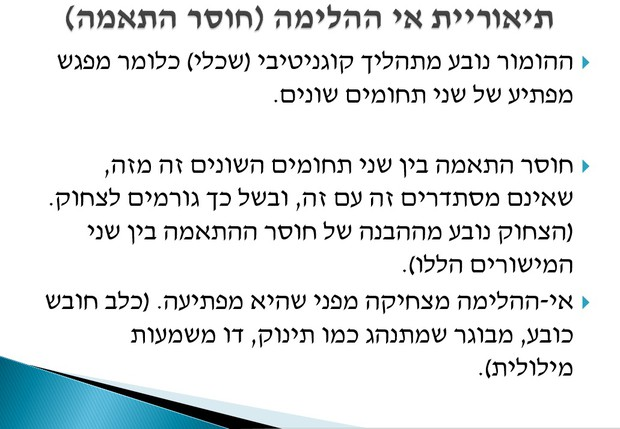
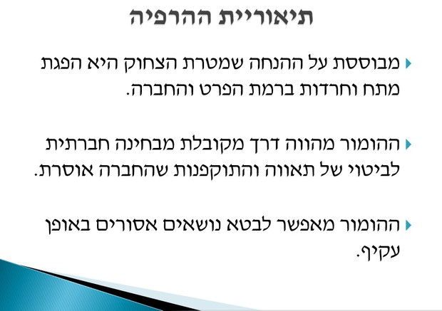
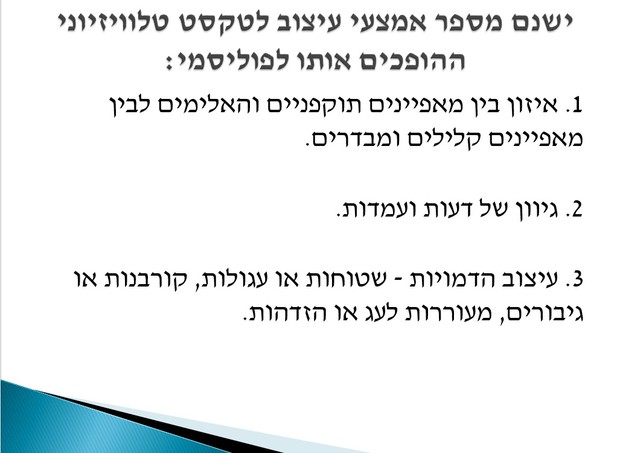

תמצית הזירה
תכנים הומוריסטיים וסאטיריים ממלאים את כלי התקשורת כולם. תכניות עתירות רייטינג, כמו "ארץ נהדרת", אתרים נצפים ותמונות וקליפים ש"רצים ברשתות החברתיות" הם תכנים מוכרים לכל אזרח. זירה זו מתבוננת גם לתוך הטקסטים: מה הופך אותם להומוריסטיים, וגם מחוץ לטקסטים: המקום של הסאטירה במרחב הציבורי הדמוקרטי.
נדגיש בזירה כי לסאטירה מקום חשוב ככלי להעברת ביקורת כלפי הממסד והשלטון, ביקורת שמתקבלת לרוב בצורה חיובית בשל השימוש בהומור.
מצב האומה -- ביבי מספר על היחסים עם ארצות הברית!
לחץ לצפייה בסרטוןמושגי מפתח בזירה
סאטירה
סאטירה היא ז'אנר שמבקש להציג ביקורת באמצעות שימוש בהומור. מדובר בטכניקה אמנותית שמבקשת ללעוג לגורם מסוים (אדם, אמונה, רעיון, קבוצה), במטרה לגרום לפעולה חברתית, לגרום לשינוי או למנוע אותו. הסאטירה היא אמצעי רטורי להעברת ביקורת, שמשתמש בטכניקות שונות של הומור: פרודיה, חיקויים, הלעגה, הגזמה ועוד.
פרודיה
פרודיה (Parody) היא קטע שמחקה בחיוך יצירה או סוג יצירות מז'אנר כלשהו. פרודיות קיימות בתחומי אמנות שונים, כמו קולנוע, מוסיקה, טלוויזיה, ספרות ועוד. לעיתים מחקים בפרודיה מישהו, בחיקוי הומוריסטי, קריקטוריסטי ולעגני.
שלישיית מה קשור- צ'רלי וחצי
לחץ לצפייה בסרטוןחיקויים
חיקויים: החיקוי היא פעולה קדמונית ביותר אצל בני אדם והיא תכונה שבעלי חיים חולקים אותה. גם ילדים משתמשים בחיקוי כדי ללמוד תנועות שונות, התנהגויות בחברה, דיבור בשפה וכדומה. אבל חיקויים על הבמה הם צורה של בידור. בצורה זו האמן משחזר את התנהגותו של אדם מפורסם, בעל חיים ועוד ומנסה להידמות להם ככל האפשר. הסיבה שחיקוי הוא כל כך מצחיק היא חוסר הטבעיות שבו אנו חוזים בהתנהגותו של אדם אחד, כשהיא לרוב מוגזמת ומוקצנת ואפילו מצחיקה, בידי אדם אחר - האמן. העובדה היא שאמנים שיודעים לחקות הם לרוב אמנים מאד אהובים ומצחיקים. לרוב, נוספים ליכולת החיקוי גם איפור ותלבושת מתאימים ואז הדמות הופכת יותר ויותר דומה, אם כי יותר ויותר מגוחכת ומשעשעת.
יוסי וידר בחיקוי של ביבי נתניהו ודונלד טראמפ
לחץ לצפייה בסרטוןפוליסמיות
ריבוי משמעויות שמצויות בטקסט. הרעיון הוא שבטקסט יש הרבה משמעויות ולא רק אחת אליה התכוון המוען או המשמעות העולה עם האידיאולוגיה ההגמונית. ג'ון פיסק פיתח רעיון זה לגבי הטקסט הטלוויזיוני. לטענתו יש הטקסט הטלוויזיוני משמעויות רבות כיוון שהוא מנסה לפנות למקסימום קהלים כדי למקסם את הרווח הכלכלי. הנקודה המרכזית היא שאנשים שונים – ממקורות תרבותיים שונים – יפענחו את הטקסט בצורות שונות בהתאם לתת-התרבות אליה הם שייכים. כך למשל, אנשים ממעמד חברתי מסוים או מוצא אתני יציגו פענוח שונה לטקסט מאשר אנשים ממעמד חברתי או ממוצא אתני אחר (וכך לגבי מגדר, מעמד כלכלי, השקפת עולם אידיאולוגית וכן הלאה)
סערה בעקבות מערכון ב"ארץ נהדרת": "פגיעה במסורת ישראל"
לחץ לקריאת הכתבה ב-Ynetהפטריוטים - הרשות השניה על מערכות התפילין ב"ארץ נהדרת": נחצו קווים אדומים
הפטריוטים - הרשות השניה על מערכות התפילין ב"ארץ נהדרת"
לחץ לצפייה בסרטוןמימים
אחת התופעות הנפוצות בתרבות האינטרנטית העכשווית היא הפצה נרחבת ומהירה של תכנים תקשורתיים בכלל ותכנים הומוריסטיים בפרט, על ידי אנשים מן השורה. בין אם מדובר בתמונה, סרטון או קטע כתוב, פריטים רבים מספור מועברים באופן יומיומי בין משתמשים ברשת, לעיתים קרובות ללא השתתפות של גופי התקשורת הממוסדים. עם זאת, לא כל התכנים מופצים באופן זהה. ההפצה נחשבת לויראלית כאשר פריט מופץ במהירות למשתמשים רבים המשתייכים לרשתות חברתיות שונות. הפריט הויראלי (למשל קליפ, או תמונה,) מופץ ללא שינויים, והתפקיד שממלאים המשתמשים הוא של העברה בלבד.
מה זה מם?
לחץ לצפייה בסרטוןהומור ויראלי
תוכן/פריט ויראלי:
פריט המופץ בזמן קצר למשתמשים רבים המשתייכים לרשתות חברתיות שונות. הפריט הוויראלי, לדוגמה סרטון או תמונה, מופץ בלי שינוי, והתפקיד שממלאים המשתמשים הוא העברה בלבד.
הומור ויראלי - תוכן הומוריסטי שמועבר ברשתות למשתמשים רבים.
הרשתות החברתיות ורשת האינטרנט מאפשרת לכל אחד להעביר טקסטים במהירות ובתפוצה רחבה ולכן עלה המושג לשתוכן ויראלי. כדאי לשים לב להשלכות של תכנים ויראליים בהקשרים של מושגים נוספים כמו פייק ניוז, אלימות ברשת ועוד.
הרצל - ראפ קורע מצחוק
לחץ לצפייה בסרטוןלעומת זאת, ההפצה היא מימטית כאשר בתוך התהליך מתרחש גם שכתוב, או יצירה מחדש, של הפריט. המשתמשים המעבירים אותו מוסיפים לו משמעויות על ידי שינוי או הוספה של תכנים לפריט, אך תוך שמירה של הצורה הכללית, למשל הוספת כיתוב הומוריסטי לתמונה או החלפת פס הקול בסרטון. בצורה כזו למקור ראשוני אחד נוצרות מגוון רחב של גרסאות, כאשר בכל גרסה הוסיפו משתמשים שונים אמירה משלהם - הומוריסטית, ביקורתית, אישית וכיוצא בזאת.
הגרסאות הרבות של תוכן המופץ באופן מימטי משמען שאין לראות בו עוד כפריט יחיד, כמו במקרה הויראלי. במקום זאת, ממים אינטרנטיים כאלו בתור קבוצה או משפחה – אסופת פריטים שחולקים מאפיינים משותפים, אך גם נבדלים זה מזה על ידי השינויים שהכניסו משתמשים שונים ברחבי הרשת. כך לדוגמא ניתן למצוא תמונה יחידה שזוכה למגוון רחב של כיתובים משעשעים שצורפו לה , או סרטון אשר זוכה לכמה חיקויים בהם משוחזר המתרחש בו באופן סאטירי על ידי אנשים מרחבי העולם.
 עם זאת, חשוב לציין כי החלוקה בין מימטי וויראלי אינה מוחלטת, ופעמים רבות תהליך ההפצה יתחיל כויראלי, בו מופץ התוכן ללא שינוי בין משתמשים רבים, ורק לאחר מכן יתחילו חלק מהמשתמשים ליצור לו גרסאות שונות ולשלב לתוכו את רעיונותיהם, מה שמוסיף לתוכן גם הפצה מימטית.
למרות שהמונח "מֶם" (meme) מקושר בימינו בעיקר לתכנים המופצים באינטרנט, מקורו הוא בספרו של הביולוג ריצ'רד דוקינס "המם האנוכי", משנת 1976. לפי דוקינס, ממים הם המקבילה של גֶנים בתחום התרבותי. הם מהווים יחידות של הפצת תרבות או רעיון, אשר עוברים מאדם לאדם מתוך חיקוי. המם, שיכול להיות ביטוי, אופנה, מנגינה וכדומה, נקלט אצל אדם אשר מביע אותו בדרכו (משלב את הביטוי בשיחה, מתלבש לפי האופנה וכו') וכך חושף את המם בפני אחרים הממשיכים את ההפצה. ממים מוגדרים כמשכפלים, אשר מפיצים מידע בתהליך של מיון ובחירה - ממים רבים מספור מתחרים על תשומת הלב של הציבור, ומתוכם זוכים להיות משוכפלים על ידי קהל רחב רק אלו המתאימים ביותר לסביבתם החברתית. המם שהתחיל כמונח תיאורטי קיבל חיים חדשים עם עליית הפופולריות של האינטרנט וצמיחת תרבות היצירה והשיתוף של תכנים על ידי משתמשים מן השורה. התפתחות זו מצריכה הגדרה ממוקדת יותר של המושג. על פי הגדרה שהוצעה לאחרונה ע"י לימור שיפמן (2013, (Shifman, ממים אינטרנטיים הם קבוצה של פריטים בעלי מאפיינים משותפים (תוכן, צורה ומיצוב), אשר נוצרו מתוך מודעות זה לזה והופצו על ידי משתמשים רבים על גבי האינטרנט במגוון גרסאות ותוספות. הממים האינטרנטיים כוללים לעיתים קרובות תכנים הומוריסטיים וקלילים, תמונות, סרטונים קצרים או ביטויים אשר זוכים להפצה וחיקוי. עם זאת, ישנם גם ממים המאפויינים בנימה רצינית, כדוגמת הקמפיין It Gets Better במהלכו משתמשים רבים העלו קליפים המתארים את סיפור חייהם, מתוך מטרה לסייע לבני נוער להטבי"ם בארה"ב המתמודדים עם בריונות ותקפנות כנגדם בבתי הספר שלהם. ניתן להגדיר את הקמפיין כמם אינטרנטי, מאחר והוא מורכב מיחידות רבות אשר נוצרו מתוך מודעות זו לזו ומאופיינות בקווי דמיון תכניים וצורניים.
ממים אינטרנטיים, לצד תכנים ויראליים, מלווים את הפעילות היומיומית של משתמשי אינטרנט רבים, בין אם בצפייה בגרסאות שונות של פריטים מימטיים או ביצירת גרסאות משל עצמם. בשל כך, ניתן ללמוד מתכנים אלו רבות על התהליכים התרבותיים והחברתיים המתרחשים ברשת. גם אם התכנים ההומוריסטיים והאווירה ההיתולית עשויים להצטייר כשטותיים, הם מייצגים מערכת מורכבת של אינטראקציה ופעילות משותפת של קהל מגוון ברחבי העולם.